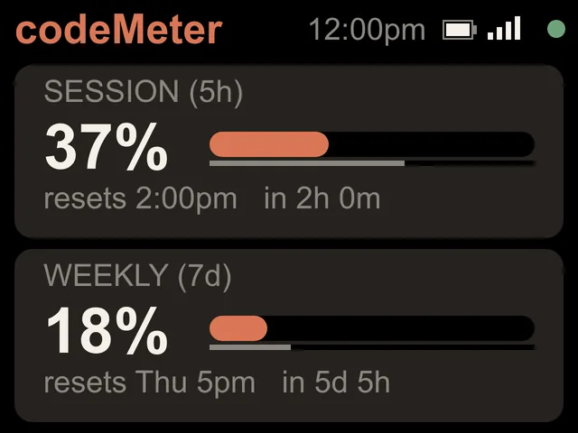

The 5-hour limit
The Claude 5-hour limit.
Since October 30, 2026, Claude Pro and Max have a weekly limit only. Here is what that means on your desk.


What changed
From two limits to one.
| When | What happened |
|---|---|
| Before Oct 30, 2026 | Pro and Max reported a 5-hour session limit and a weekly limit. codeMeter showed two cards. |
| Oct 30, 2026 | Pro and Max changed to a weekly limit only. |
| Oct 30-31, 2026 | Firmware 0.4.7 installed itself on every codeMeter: one large weekly card instead of an empty 5-hour line. |
Now
It shows what your plan reports.

Try it
A 5-hour window, on pace?
Pick the 5-hour or Weekly card and type your numbers; the screen shows what your codeMeter would.
In use
Glance, don't check.
It sits beside the keyboard, so your limits are a look away while you work.


8 stand colours. Pick one to start your build.
FAQ
Questions.
Where did the 5-hour limit go?
On October 30, 2026 Claude Pro and Max changed to a weekly limit only. codeMeter updated itself the next day (firmware 0.4.7) and now shows one large weekly card.
Will the 5-hour line come back?
If your plan reports a 5-hour limit, codeMeter shows it again by itself. There is nothing to change on the device.
Did I have to do anything when it changed?
No. The update installed itself over Wi-Fi.
Do Codex plans have a 5-hour limit?
ChatGPT Plus reports a 5-hour and a weekly Codex limit; codeMeter shows both.
myDeskMeter